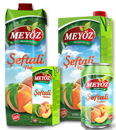

- 
-
ÖZELLİKLERİ
İçeriğinde bol miktarda A, B3 ve C vitaminleriyle, folik asit, betakaroten, potasyum bulunan şeftali nektarı, vücudun savunma mekanizmasını güçlendirmesinin yanısıra hazmı kolaylaştırarak sindirime yardımcı olur.
Şeftali nektarı vücudun toksinlerden arınmasını sağlar, ayrıca antioksidan özelliği ile kanı temizler, böbrek ve safra kesesinin düzenli çalışmasına olanak sağlar. Şeftali nektarı bol miktarda C vitamini içerir.
Şeftalide ayrıca bağışıklık sisteminin ihtiyaç duyması halinde A vitaminine dönüşen temel madde olan betakaroten de zengin bulunur.
Kanser, kalp hastalıkları, uyku bozuklukları gibi rahatsızlıklarında da önüne geçmeye yardımcı olur. Meyöz Şeftali Nektarı, Sindirimi kolaylaştırmaya ve böbreklerin düzenli çalışmasına yardımcı olur.